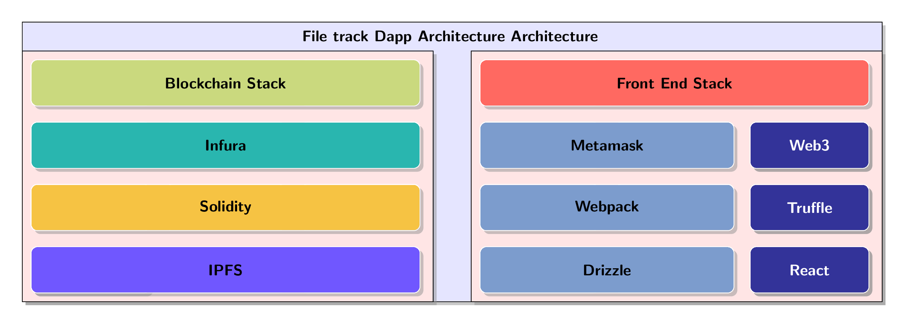

\documentclass[border=3mm]{standalone}
\usepackage{tikz}
\usetikzlibrary{backgrounds,shadows,positioning,fit,matrix,shapes.geometric, shapes.arrows} % add shadows #1
% a way to cut shadows in a cell #2
%https://tex.stackexchange.com/questions/129318/remove-drop-shadow-from-one-node
\makeatletter
\tikzset{no shadows/.code=\let\tikz@preactions\pgfutil@empty}
\makeatother
\tikzset{background/.style={rectangle, fill=red!10, inner sep=0.2cm},
backgroundN/.style={rectangle, fill=white, inner sep=0.3cm},
backgroundNN/.style={rectangle, fill=red!10, inner sep=0.2cm}}
\tikzset{back/.style={rectangle, fill=blue!10, inner sep=0.2cm},
backgroundN/.style={rectangle, fill=white, inner sep=0.3cm},
backgroundNN/.style={rectangle, fill=red!10, inner sep=0.2cm}}
\definecolor{mybluei}{RGB}{124,156,205}
\definecolor{myblueii}{RGB}{73,121,193}
\definecolor{mygreen}{RGB}{202,217,126}
\definecolor{mypink}{RGB}{233,198,235}
\definecolor{rinkeby}{HTML}{F6C343}
\definecolor{kovan}{HTML}{7057ff}
\definecolor{ropsten}{HTML}{FF4A8D}
\definecolor{mainnet}{HTML}{29B6AF}
\definecolor{antiquefuchsia}{rgb}{0.57, 0.36, 0.51}
\definecolor{byzantium}{rgb}{0.44, 0.16, 0.39}
\definecolor{darkcandyapplered}{rgb}{0.64, 0.0, 0.0}
\definecolor{darkbyzantium}{rgb}{0.36, 0.22, 0.33}
\definecolor{jasper}{rgb}{0.84, 0.23, 0.24}
\definecolor{pastelred}{rgb}{1.0, 0.41, 0.38}
\definecolor{pinkpearl}{rgb}{0.91, 0.67, 0.81}
\definecolor{blue(pigment)}{rgb}{0.2, 0.2, 0.6}
\newcommand\widernode[5][widebox]{
\node[
#1,
fit={(#2) (#3)},
label=center:{\sffamily\bfseries\color{black}#4}] (#5) {};
}
\begin{document}
\begin{tikzpicture}[node distance=2pt,outer sep=0pt, % just do nothing after modification
boxstyle/.style={
draw=white,
fill=#1,
rounded corners, drop shadow, %to get a shadow in below a node
font={\sffamily\bfseries\color{white}},
align=center,
minimum height=30pt
},
box/.style={
boxstyle=#1,
text width=2.5cm},
box/.default=mybluei,
title/.style={font={\sffamily\bfseries\color{black}}},
widebox/.style={draw=white,inner sep=0pt, rounded corners,fill=#1,drop shadow},
widebox/.default=mybluei,
mylabel/.style={font={\sffamily\bfseries\color{black}}},
database/.style={
cylinder,
cylinder uses custom fill,
cylinder body fill=yellow!50,
cylinder end fill=yellow!50,
shape border rotate=90,
aspect=0.25,
draw
}
]
\matrix (stack) [% boxstyle=mybluei!40,%will overpaint blocks with background
column sep=10pt, row sep=10pt, inner sep=4mm,%
matrix of nodes,
nodes={box, outer sep=0pt, anchor=center, inner sep=3pt},%
nodes in empty cells=false,% #3
row 1/.style={nodes={fill=none,draw=none,minimum height=3mm}},
]
{
|[no shadows]| & & & [1cm] & & |[no shadows]| \\ % #5
%RCP main & Authoring & Browsing & Publishing & Search&|[no shadows]| \\
|[no shadows]| & & |[no shadows]| & |[no shadows]|& &|[no shadows]| \\
|[no shadows]| & |[no shadows]| & |[no shadows]| &|[no shadows]| & |[no shadows]|& |[box=blue(pigment)]| Web3 \\
|[no shadows]|& |[no shadows]| &|[no shadows]| & |[no shadows]| &|[no shadows]| & |[box=blue(pigment)]| Truffle \\
||[no shadows]| & |[no shadows]| & |[no shadows]| & |[no shadows]| & |[no shadows]| & |[box=blue(pigment)]| React \\};
\widernode[]{stack-1-1}{stack-1-6}{File track Dapp Architecture Architecture}{EPF} %#5
\widernode[widebox=mygreen]{stack-2-1}{stack-2-3}{Blockchain Stack}{SM}
\widernode[widebox=pastelred]{stack-2-4}{stack-2-6}{Front End Stack}{FE}
\widernode[widebox=mainnet]{stack-3-1}{stack-3-3}{Infura}{Ethereum}
\widernode{stack-3-4}{stack-3-5}{Metamask}{MM}
% \widernode{stack-3-6}{stack-3-6}{Web3}{AA}
\widernode[widebox=rinkeby]{stack-4-1}{stack-4-3}{Solidity}{Solidity}
\widernode{stack-4-4}{stack-4-5}{Webpack}{BB}
% \widernode{stack-4-6}{stack-4-6}{Truffle}{CC}
\widernode[widebox=kovan]{stack-5-1}{stack-5-3}{IPFS}{IPFS}
\widernode{stack-5-4}{stack-5-5}{Drizzle}{DC}
% \widernode{stack-5-6}{stack-5-6}{React}{MC23}
%\widernode[widebox=pinkpearl]{stack-4-1}{stack-4-1}{Exchanger}{UMA23}
%\widernode[widebox=pinkpearl]{stack-4-2}{stack-4-3}{StoreFront}{UMA}
%\widernode{stack-4-4}{stack-4-5}{Export/Import}{ExImp}
%\widernode[widebox=pinkpearl]{stack-5-2}{stack-5-3}{ERC721}{EMF}
%\widernode[widebox=mygreen]{stack-6-1}{stack-6-5}{RCP Runtime}{RCPrun}
% \widernode[widebox, text width=1.5cm, align=center]{stack-2-6}{stack-3-6}{Normal text works}{NTWorks}
%
%\node [fit={(stack.south west)(stack.south east)},boxstyle=myblueii,draw=black,inner sep=0pt,below=3pt of stack.south,anchor=north,label={[mylabel]center:Java Runtime}] (JavaR) {};
%
%
%
\begin{pgfonlayer}{background}
\coordinate (aux) at ([xshift=1mm]stack-5-6.east);
\node [back,
fit=(stack-1-1) (stack-5-1) (aux), draw, drop shadow,
] {};
%\node [backgroundN,
% fit=(stack-3-5) ] {};
%\node [backgroundNN,draw, drop shadow,
% fit=(stack-3-5) ] {};
\end{pgfonlayer}
% % smth to create an arbitrary block with a border and shadow
%Background for smart contracts
\begin{pgfonlayer}{background}
\coordinate (aux) at ([xshift=1mm]stack-5-3.east);
\node [background,
fit=(stack-2-1) (stack-5-1) (aux), draw, drop shadow,
] {};
%\node [backgroundN,
% fit=(stack-3-5) ] {};
%\node [backgroundNN,draw, drop shadow,
% fit=(stack-3-5) ] {};
\end{pgfonlayer}
\begin{pgfonlayer}{background}
\coordinate (aux) at ([xshift=1mm]stack-5-6.east);
\node [background,
fit=(stack-2-4) (stack-5-4) (aux), draw, drop shadow,
] {};
%\node [backgroundN,
% fit=(stack-3-5) ] {};
%\node [backgroundNN,draw, drop shadow,
% fit=(stack-3-5) ] {};
\end{pgfonlayer}
\end{tikzpicture}
\end{document}